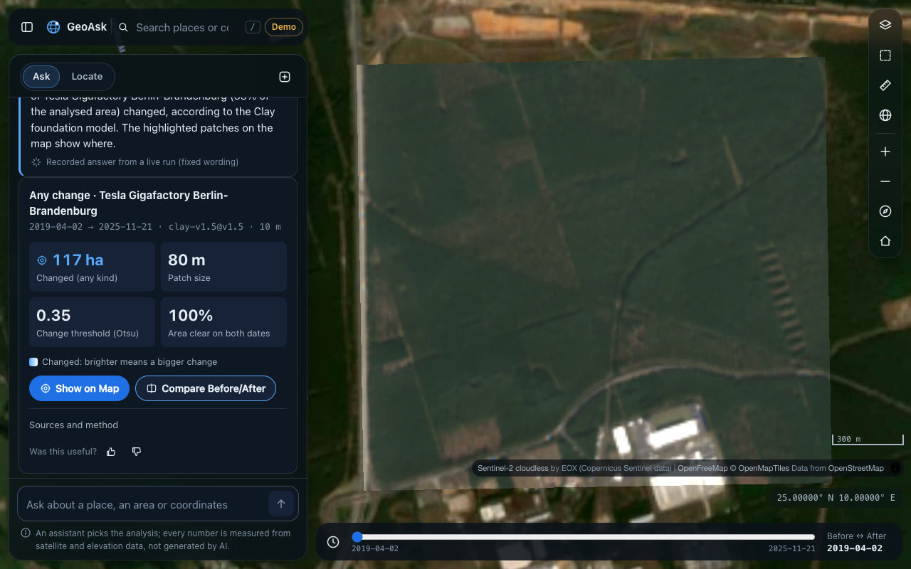
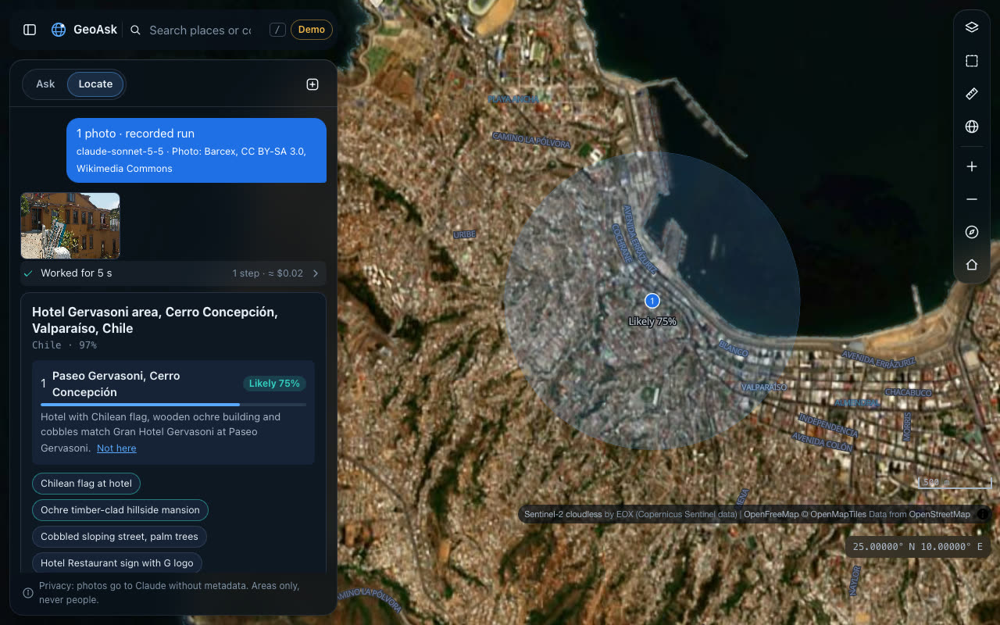
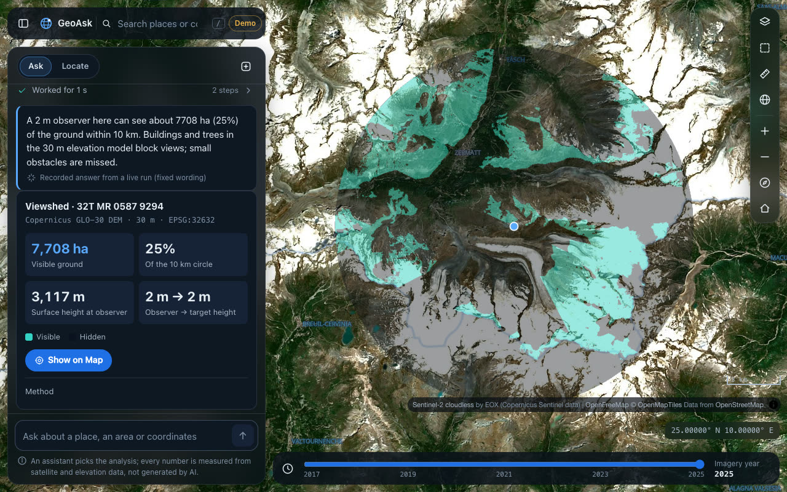

GeoAsk
Ask a map questions in plain language. Get answers measured from satellite imagery, anywhere on Earth, with any sensor and any geospatial foundation model.

“What changed at the Tesla Gigafactory Berlin since 2019?” Clay compares every 80 m patch: 117 ha changed.
What you can ask

Where was this photo taken?
A Claude agent reads the clues and checks them against open map data, reference photos, satellite views and terrain. Likely areas with confidence, never a pin, never people.

How busy is this port?
Vessels on every Sentinel-1 radar pass, day or night, through cloud. Bay of Gibraltar: about 50 per pass, unusual days flagged.

What can be seen from here?
Viewshed and line of sight from the Copernicus 30 m elevation model. From Gornergrat: 25% of the ground within 10 km.

How steep is it?
Elevation, slope and relief. Zermatt: 1,437 to 4,540 m, mean slope 26°.
A sharper look
Sentinel-2 sharpened from 10 m to 2.5 m, constrained to agree with the real pixels. For viewing only.

Field mapping
MGRS grid, coordinates in decimal, DMS, MGRS and UTM, distance and bearing in mils, point cards, hillshade and 3D.
Why it’s different
Measured, not generated
Language models only choose the tool and write the answer. Every number comes from pixels, and each number in the answer is checked.
Any sensor, any model
Bands are found by wavelength, so a new satellite is a YAML file. Foundation models, detectors and super-resolution plug in through small interfaces.
Free and local
Open data streamed straight from public buckets, no API keys for the map tools, runs on a laptop. Only your area’s pixels are read.
Run it yourself
git clone https://github.com/cweekiat/geoask && cd geoask uv venv && uv pip install -e ".[serve,locate]" geoask serve # http://127.0.0.1:8787/app/
macOS or Linux. Optional: Ollama with Qwen 2.5 7B for free-form questions, an Anthropic API key (pasted in the app) for Locate.